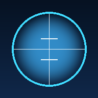

Simulátor geodetických přístrojů
Totální stanice, nivelační přístroje a GNSS rovery v rozšířené realitě. Horizontace stavěcími šrouby, ustanovky, kompenzátor, pohled dalekohledem s dálkoměrnými ryskami.
Tip: v Safari zvolte Sdílet → Přidat na plochu. Aplikace pak funguje i offline.